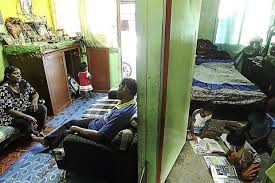

Information on the Community
The entire housing was built on the city’s landfilled rubbish dump. It is currently notorious for the high crime rate, drug abuse, gang fights and conflicts. A harbor for drug addicts, alcoholics, gangsters, prostitutes and petty criminals. Jinjang Utara is littered with dilapidated rumah transit (supposed to be temporary housing). Currently, housing more than 2000 people. These are forgotten people who became disillusioned and embittered. The inhabitants waited for 40 years to date, to be relocated to their new residence under Projek Perumahan (PPR) which has yet to happen. This is 38 years later than the promised duration by the government. Even if they are offered low cost housing tomorrow, they will not be able to afford it as they can hardly afford the RM40 per month rent even now. The average combined income per month for each family is less than RM1000.
The integrity of the rumah transit is questionable because they were not built to last. This poses a health and safety hazard for the family staying under the roof of each unit. The occupants have grown over the years to include three generations with an average of ten people in each unit. Each unit is cramped in a 480-square-feet space for the entire family of over 10 pax each.
The children in Jinjang Utara have been growing up in a poverty stricken environment. Some were abandoned by their parents or are neglected in an environment of abject poverty. Violence is rampant in this place. Teenagers are at risk of being recruited by gangs. With their home so broken and crowded, the teenagers have no place to turn to. The gangs offered financial and communal support/relief, including a sense of belonging.
Jonathan Ambalagan and Mary Ramamoothy started the community work and have been reaching out to the children of Jinjang Utara for the past 17 years. It is their life mission to see the community transformed and changed through helping the children - one child at a time. The chief focus is on education and social concern activities. They conduct weekly outdoor activities to instill moral values in children. Over 100 children attend their session every week. Over the years, many of these children have progressed to complete their secondary education. Few are even completing their college education through the sponsorship of kind benefactors like HELP Education Group.
Jonathan and Mary make home visits weekly to know each family’s respective needs. In the process, they are supporting some of the families’ need such as education (school bus), groceries, school supplies, etc. Because of the financial burden, many of these children are undernourished and some are even deprived of food for many days. They then have to survive on occasional leftovers offered by kind neighbors.
The children are constantly subjected to danger of bad influence, perversion and exploitation daily under such conditions. Occasionally, Jonathan and Mary will be called for counselling, as the men are thrown in jail, taken into drug rehab, youths arrested for fights or drug possession, etc. The work is immense with never ending challenges.
Update in 2018: The low cost housing flats built for this community has since been open for the families to move in. However, the families are still finding it difficult to afford the lease, as in comparison to the rental they used to pay for the Rumah Panjang, this is significantly more costly.